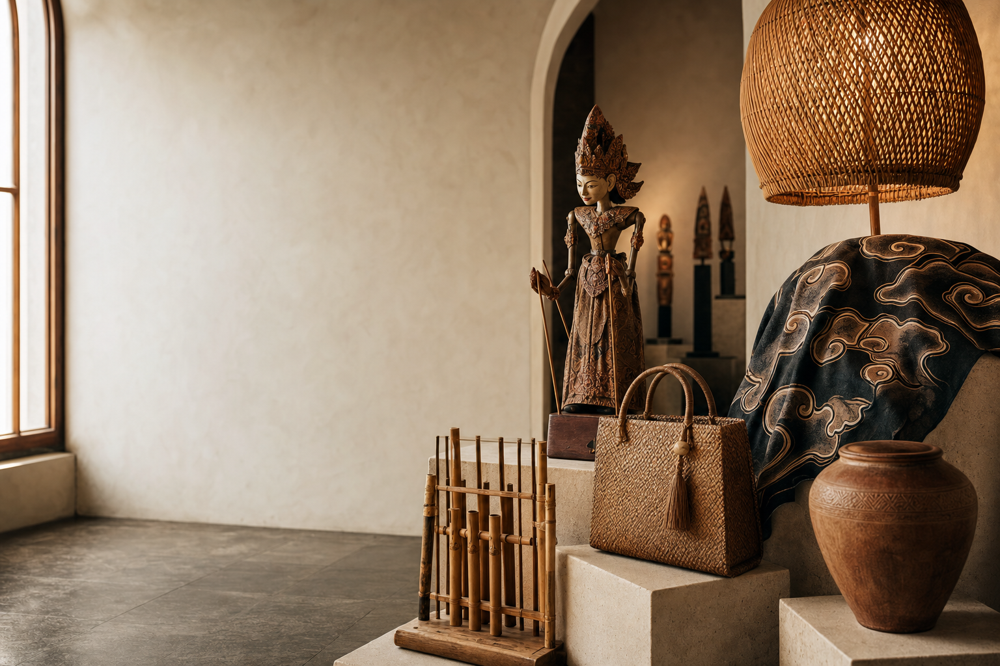

ART COLLECTION · BANDUNG
Wayang Golek Bandung
Dipahat manual dari kayu pilihan; sebuah karakter Sunda yang hidup dalam detail.
Rp279.000
GALERI KERAJINAN JAWA BARAT · BRAGA, BANDUNG
Dibuat oleh tangan lokal, dirawat oleh tradisi, dan dihadirkan untuk ruang hidup masa kini.
KARYA × NUSANTARA
KRAYANA lahir dari dua kata: Karya dan Nusantara. Di jantung kawasan heritage Braga, kami merawat kekayaan budaya melalui pilihan kerajinan khas Jawa Barat yang autentik.
Setiap karya menghubungkan Anda dengan tradisi, keterampilan, dan kehidupan pengrajin di baliknya—diterjemahkan dalam desain yang relevan untuk hari ini.
Kenali perjalanan kami →VISI KAMI
Menjadi galeri kerajinan khas Jawa Barat yang memperkenalkan warisan budaya lokal melalui produk handmade premium yang inovatif, autentik, dan berkelanjutan.
MISI KAMI
.jpg.jpeg) PARAHYANGAN · JAWA BARAT
PARAHYANGAN · JAWA BARATHERITAGE OF WEST JAVA
Dari kayu yang dipahat di Bandung, tanah liat yang dibentuk di Plered, hingga serat alami yang dianyam di Tasikmalaya—setiap daerah memiliki bahasa rupanya sendiri.
“Kami tidak hanya menjaga bentuknya. Kami menjaga ingatan yang hidup di dalamnya.”Kurator KRAYANA
KOLEKSI PILIHAN
Enam karya khas Jawa Barat, dikurasi untuk mereka yang menghargai detail, makna, dan keaslian.
MENGAPA KRAYANA
Berasal dari tradisi dan wilayah pembuatannya.
Detail terjaga melalui tangan pengrajin terampil.
Material alami dan proses yang lebih bertanggung jawab.
Setiap pembelian mendukung ekosistem pengrajin.
PROGRAM ISTIMEWA
Untuk pembelian pertama Anda. Karena setiap karya memiliki cerita yang layak dibawa pulang.
Klaim Penawaran →#SatuKaryaSejutaCerita
Ikuti Program →STORY BEHIND EVERY CRAFT
Material dipilih dari alam dan komunitas setempat.
Tangan pengrajin meneruskan pengetahuan lintas generasi.
Anda membawa maknanya ke ruang dan kehidupan baru.
SUARA SAHABAT KRAYANA
PERTANYAAN UMUM
Belum menemukan jawaban? Tim kami senang membantu Anda secara langsung.
Hubungi kami →Ya. Kami bekerja langsung dengan pengrajin dan komunitas lokal Jawa Barat serta mengkurasi mutu setiap karya.
Ya, kami melayani pengiriman nasional dengan pengemasan khusus yang disesuaikan dengan karakter produk.
Bisa untuk beberapa kategori. Hubungi tim kami untuk mendiskusikan ukuran, material, jumlah, dan waktu pengerjaan.
Sampaikan kode HERITAGE20 kepada tim kami saat pembelian pertama. Syarat dan ketentuan berlaku.
KUNJUNGI & HUBUNGI
Jl. Braga No. 89, Kel. Braga
Sumur Bandung, Bandung 40111
Senin–Minggu · 09.00–21.00 WIB
halo@krayana.id
+62 812 3456 7890